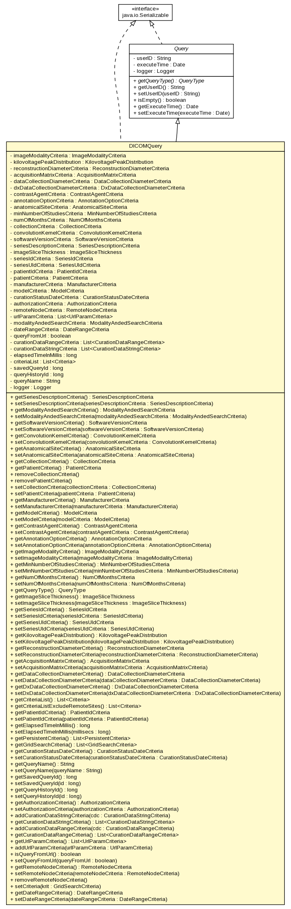

gov.nih.nci.ncia.query
Class DICOMQuery

java.lang.Object
 gov.nih.nci.ncia.query.Query
gov.nih.nci.ncia.query.DICOMQuery
gov.nih.nci.ncia.query.Query
gov.nih.nci.ncia.query.DICOMQuery
- All Implemented Interfaces:
- Queriable, java.io.Serializable
public class DICOMQuery
- extends Query
- implements java.io.Serializable
- See Also:
- Serialized Form
| Methods inherited from class java.lang.Object |
clone, equals, finalize, getClass, hashCode, notify, notifyAll, toString, wait, wait, wait |
imageModalityCriteria
private ImageModalityCriteria imageModalityCriteria
kilovoltagePeakDistribution
private KilovoltagePeakDistribution kilovoltagePeakDistribution
reconstructionDiameterCriteria
private ReconstructionDiameterCriteria reconstructionDiameterCriteria
acquisitionMatrixCriteria
private AcquisitionMatrixCriteria acquisitionMatrixCriteria
dataCollectionDiameterCriteria
private DataCollectionDiameterCriteria dataCollectionDiameterCriteria
dxDataCollectionDiameterCriteria
private DxDataCollectionDiameterCriteria dxDataCollectionDiameterCriteria
contrastAgentCriteria
private ContrastAgentCriteria contrastAgentCriteria
annotationOptionCriteria
private AnnotationOptionCriteria annotationOptionCriteria
anatomicalSiteCriteria
private AnatomicalSiteCriteria anatomicalSiteCriteria
minNumberOfStudiesCriteria
private MinNumberOfStudiesCriteria minNumberOfStudiesCriteria
numOfMonthsCriteria
private NumOfMonthsCriteria numOfMonthsCriteria
collectionCriteria
private CollectionCriteria collectionCriteria
convolutionKernelCriteria
private ConvolutionKernelCriteria convolutionKernelCriteria
softwareVersionCriteria
private SoftwareVersionCriteria softwareVersionCriteria
seriesDescriptionCriteria
private SeriesDescriptionCriteria seriesDescriptionCriteria
imageSliceThickness
private ImageSliceThickness imageSliceThickness
seriesIdCriteria
private SeriesIdCriteria seriesIdCriteria
seriesUIdCriteria
private SeriesUIdCriteria seriesUIdCriteria
patientIdCriteria
private PatientIdCriteria patientIdCriteria
patientCriteria
private PatientCriteria patientCriteria
manufacturerCriteria
private ManufacturerCriteria manufacturerCriteria
modelCriteria
private ModelCriteria modelCriteria
curationStatusDateCriteria
private CurationStatusDateCriteria curationStatusDateCriteria
authorizationCriteria
private AuthorizationCriteria authorizationCriteria
remoteNodeCriteria
private RemoteNodeCriteria remoteNodeCriteria
urlParamCriteria
private java.util.List<UrlParamCriteria> urlParamCriteria
modalityAndedSearchCriteria
private ModalityAndedSearchCriteria modalityAndedSearchCriteria
dateRangeCriteria
private DateRangeCriteria dateRangeCriteria
queryFromUrl
private boolean queryFromUrl
curationDataRangeCriteria
private java.util.List<gov.nih.nci.ncia.criteria.CurationDataRangeCriteria> curationDataRangeCriteria
curationDataStringCriteria
private java.util.List<gov.nih.nci.ncia.criteria.CurationDataStringCriteria> curationDataStringCriteria
elapsedTimeInMillis
private long elapsedTimeInMillis
criteriaList
private java.util.List<gov.nih.nci.ncia.criteria.Criteria> criteriaList
savedQueryId
private long savedQueryId
queryHistoryId
private long queryHistoryId
queryName
private java.lang.String queryName
logger
private org.apache.log4j.Logger logger
DICOMQuery
public DICOMQuery()
getSeriesDescriptionCriteria
public SeriesDescriptionCriteria getSeriesDescriptionCriteria()
- Returns:
- Returns the getSoftwareVersionC
setSeriesDescriptionCriteria
public void setSeriesDescriptionCriteria(SeriesDescriptionCriteria seriesDescriptionCriteria)
- Parameters:
getSoftwareVersionCritera - The getSoftwareVersionCritera to set.
getModalityAndedSearchCriteria
public ModalityAndedSearchCriteria getModalityAndedSearchCriteria()
- Returns:
setModalityAndedSearchCriteria
public void setModalityAndedSearchCriteria(ModalityAndedSearchCriteria modalityAndedSearchCriteria)
- Parameters:
modalityAndedSearchCriteria -
getSoftwareVersionCriteria
public SoftwareVersionCriteria getSoftwareVersionCriteria()
- Returns:
- Returns the getSoftwareVersionC
setSoftwareVersionCriteria
public void setSoftwareVersionCriteria(SoftwareVersionCriteria softwareVersionCriteria)
- Parameters:
getSoftwareVersionCritera - The getSoftwareVersionCritera to set.
getConvolutionKernelCriteria
public ConvolutionKernelCriteria getConvolutionKernelCriteria()
- Returns:
- Returns the ConvolutionKernel.
setConvolutionKernelCriteria
public void setConvolutionKernelCriteria(ConvolutionKernelCriteria convolutionKernelCriteria)
- Parameters:
ConvolutionKernel - The ConvolutionKernelto set.
getAnatomicalSiteCriteria
public AnatomicalSiteCriteria getAnatomicalSiteCriteria()
setAnatomicalSiteCriteria
public void setAnatomicalSiteCriteria(AnatomicalSiteCriteria anatomicalSiteCriteria)
- Parameters:
anatomicalSiteCritera - The anatomicalSiteCritera to set.
getCollectionCriteria
public CollectionCriteria getCollectionCriteria()
- Returns:
- Returns the collectionCriteria.
getPatientCriteria
public PatientCriteria getPatientCriteria()
- Returns:
- Returns the patientCriteria.
removeCollectionCriteria
public void removeCollectionCriteria()
- Removes collection criteria from the list
removePatientCriteria
public void removePatientCriteria()
- Removes collection criteria from the list
setCollectionCriteria
public void setCollectionCriteria(CollectionCriteria collectionCriteria)
- Parameters:
collectionCriteria - The collectionCriteria to set.
setPatientCriteria
public void setPatientCriteria(PatientCriteria patientCriteria)
- Parameters:
patientCriteria - The patientCriteria to set.
getManufacturerCriteria
public ManufacturerCriteria getManufacturerCriteria()
- Returns:
- Returns the manufactureCriteria.
setManufacturerCriteria
public void setManufacturerCriteria(ManufacturerCriteria manufacturerCriteria)
- Parameters:
collectionCriteria - The collectionCriteria to set.
getModelCriteria
public ModelCriteria getModelCriteria()
setModelCriteria
public void setModelCriteria(ModelCriteria modelCriteria)
- Parameters:
collectionCriteria - The collectionCriteria to set.
getContrastAgentCriteria
public ContrastAgentCriteria getContrastAgentCriteria()
- Returns:
- Returns the contrastAgentCriteria.
setContrastAgentCriteria
public void setContrastAgentCriteria(ContrastAgentCriteria contrastAgentCriteria)
- Parameters:
contrastAgentCriteria - The contrastAgentCriteria to set.
getAnnotationOptionCriteria
public AnnotationOptionCriteria getAnnotationOptionCriteria()
- Returns:
- Returns the annotationOptionCriteria.
setAnnotationOptionCriteria
public void setAnnotationOptionCriteria(AnnotationOptionCriteria annotationOptionCriteria)
- Parameters:
annotationOptionCriteria - The annotationOptionCriteria to set.
getImageModalityCriteria
public ImageModalityCriteria getImageModalityCriteria()
- Returns:
- Returns the imageModalityCriteria.
setImageModalityCriteria
public void setImageModalityCriteria(ImageModalityCriteria imageModalityCriteria)
- Parameters:
imageModalityCriteria - The imageModalityCriteria to set.
getMinNumberOfStudiesCriteria
public MinNumberOfStudiesCriteria getMinNumberOfStudiesCriteria()
- Returns:
- Returns the minNumberOfStudiesCriteria.
setMinNumberOfStudiesCriteria
public void setMinNumberOfStudiesCriteria(MinNumberOfStudiesCriteria minNumberOfStudiesCriteria)
- Parameters:
minNumberOfStudiesCriteria - The minNumberOfStudiesCriteria to set.
getNumOfMonthsCriteria
public NumOfMonthsCriteria getNumOfMonthsCriteria()
- Returns:
- Returns the numOfMonthsCriteria.
setNumOfMonthsCriteria
public void setNumOfMonthsCriteria(NumOfMonthsCriteria numOfMonthsCriteria)
- Parameters:
numOfMonthsCriteria - The numOfMonthsCriteria to set.
getQueryType
public QueryType getQueryType()
- Specified by:
getQueryType in class Query
- Returns:
- the query type
getImageSliceThickness
public ImageSliceThickness getImageSliceThickness()
- Returns:
- Returns the imageSliceThickness.
setImageSliceThickness
public void setImageSliceThickness(ImageSliceThickness imageSliceThickness)
- Parameters:
imageSliceThickness - The imageSliceThickness to set.
getSeriesIdCriteria
public SeriesIdCriteria getSeriesIdCriteria()
- Returns:
- Returns the seriesIdCriteria.
setSeriesIdCriteria
public void setSeriesIdCriteria(SeriesIdCriteria seriesIdCriteria)
- Parameters:
seriesIdCriteria - The seriesIdCriteria to set.
getSeriesUIdCriteria
public SeriesUIdCriteria getSeriesUIdCriteria()
- Returns:
- Returns the seriesIdCriteria.
setSeriesUIdCriteria
public void setSeriesUIdCriteria(SeriesUIdCriteria seriesUIdCriteria)
- Parameters:
seriesIdCriteria - The seriesIdCriteria to set.
getKilovoltagePeakDistribution
public KilovoltagePeakDistribution getKilovoltagePeakDistribution()
- Returns:
- Returns the imageSliceThickness.
setKilovoltagePeakDistribution
public void setKilovoltagePeakDistribution(KilovoltagePeakDistribution kilovoltagePeakDistribution)
- Parameters:
imageSliceThickness - The imageSliceThickness to set.
getReconstructionDiameterCriteria
public ReconstructionDiameterCriteria getReconstructionDiameterCriteria()
- Returns:
- Returns the reconstructionDiameter.
setReconstructionDiameterCriteria
public void setReconstructionDiameterCriteria(ReconstructionDiameterCriteria reconstructionDiameterCriteria)
- Parameters:
reconstructionDiameter - The reconstructionDiameter to set.
getAcquisitionMatrixCriteria
public AcquisitionMatrixCriteria getAcquisitionMatrixCriteria()
- Returns:
- Returns the acquisitionMatrix.
setAcquisitionMatrixCriteria
public void setAcquisitionMatrixCriteria(AcquisitionMatrixCriteria acquisitionMatrixCriteria)
- Parameters:
acquisitionMatrix - The acquisitionMatrix to set.
getDataCollectionDiameterCriteria
public DataCollectionDiameterCriteria getDataCollectionDiameterCriteria()
- Returns:
- Returns the dataCollectionDiameter.
setDataCollectionDiameterCriteria
public void setDataCollectionDiameterCriteria(DataCollectionDiameterCriteria dataCollectionDiameterCriteria)
- Parameters:
dataCollectionDiameter - The dataCollectionDiameter to set.
getDxDataCollectionDiameterCriteria
public DxDataCollectionDiameterCriteria getDxDataCollectionDiameterCriteria()
- Returns:
- Returns the dxDataCollectionDiameter.
setDxDataCollectionDiameterCriteria
public void setDxDataCollectionDiameterCriteria(DxDataCollectionDiameterCriteria dxDataCollectionDiameterCriteria)
- Parameters:
dxDataCollectionDiameter - The dxDataCollectionDiameter to set.
getCriteriaList
public java.util.List<gov.nih.nci.ncia.criteria.Criteria> getCriteriaList()
getCriteriaListExcludeRemoteSites
public java.util.List<gov.nih.nci.ncia.criteria.Criteria> getCriteriaListExcludeRemoteSites()
getPatientIdCriteria
public PatientIdCriteria getPatientIdCriteria()
- Returns:
- Returns the patientIdCriteria.
setPatientIdCriteria
public void setPatientIdCriteria(PatientIdCriteria patientIdCriteria)
- Parameters:
patientIdCriteria - The patientIdCriteria to set.
getElapsedTimeInMillis
public long getElapsedTimeInMillis()
- Get number of milliseconds that it took to run the query
- Returns:
setElapsedTimeInMillis
public void setElapsedTimeInMillis(long millisecs)
- Set number of milliseconds that it took to run the query
getPersistentCriteria
public java.util.List<gov.nih.nci.ncia.criteria.PersistentCriteria> getPersistentCriteria()
- Filters the query's list of criteria to include
only those criteria that are PersistentCriteria
- Returns:
getGridSearchCriteria
public java.util.List<GridSearchCriteria> getGridSearchCriteria()
- Filters the query's list of criteria to include
only those criteria that are GridSearchCriteria
- Returns:
getCurationStatusDateCriteria
public CurationStatusDateCriteria getCurationStatusDateCriteria()
- Getter for curation status date
- Returns:
setCurationStatusDateCriteria
public void setCurationStatusDateCriteria(CurationStatusDateCriteria curationStatusDateCriteria)
- Setter for curation status date
getQueryName
public java.lang.String getQueryName()
- The name that this query was saved under
- Returns:
- the saved query name
setQueryName
public void setQueryName(java.lang.String queryName)
- Setter for query name
- Parameters:
queryName - - the name that this query was saved under
getSavedQueryId
public long getSavedQueryId()
- Returns:
- ID of the query
setSavedQueryId
public void setSavedQueryId(long id)
- Setter
- Parameters:
id -
getQueryHistoryId
public long getQueryHistoryId()
- Returns:
- ID of the query
setQueryHistoryId
public void setQueryHistoryId(long id)
- Setter
- Parameters:
id -
getAuthorizationCriteria
public AuthorizationCriteria getAuthorizationCriteria()
- Getter for authorization criteria
- Returns:
setAuthorizationCriteria
public void setAuthorizationCriteria(AuthorizationCriteria authorizationCriteria)
- Setter for authorization criteria
addCurationDataStringCriteria
public void addCurationDataStringCriteria(gov.nih.nci.ncia.criteria.CurationDataStringCriteria cdc)
- Add a curation data criteria
- Parameters:
cdc - - the criteria
getCurationDataStringCriteria
public java.util.List<gov.nih.nci.ncia.criteria.CurationDataStringCriteria> getCurationDataStringCriteria()
- Get curation data criteria
- Returns:
- a list of this query's curation data criteria
addCurationDataRangeCriteria
public void addCurationDataRangeCriteria(gov.nih.nci.ncia.criteria.CurationDataRangeCriteria cdc)
- Add a curation data criteria
- Parameters:
cdc - - the criteria
getCurationDataRangeCriteria
public java.util.List<gov.nih.nci.ncia.criteria.CurationDataRangeCriteria> getCurationDataRangeCriteria()
- Get curation data criteria
- Returns:
- a list of this query's curation data criteria
getUrlParamCriteria
public java.util.List<UrlParamCriteria> getUrlParamCriteria()
- Returns a list of the URLParamCriteria
- Returns:
addUrlParamCriteria
public void addUrlParamCriteria(UrlParamCriteria urlParamCriteria)
- Adds a URLParamCriteria to the query. Due to specifications, it should only
ever contain 2 items, so that check is made.
- Parameters:
urlParamCriteria -
isQueryFromUrl
public boolean isQueryFromUrl()
- Returns true if it is a URL query
- Returns:
setQueryFromUrl
public void setQueryFromUrl(boolean queryFromUrl)
- Sets whether or not it is a query from the URL.
- Parameters:
queryFromUrl -
getRemoteNodeCriteria
public RemoteNodeCriteria getRemoteNodeCriteria()
setRemoteNodeCriteria
public void setRemoteNodeCriteria(RemoteNodeCriteria remoteNodeCriteria)
removeRemoteNodeCriteria
public void removeRemoteNodeCriteria()
setCriteria
public void setCriteria(GridSearchCriteria krit)
- This allows you to populate the DICOMQuery with any GridSearchCriteria. This method was added
as a means for us to break out the UI JSF backing beans from the previous repopulate methods that
were inside each criteria.
This clearly "reflectable but wasn't" method was a compromise of time and effort. If the number
of criteria significantly changes to more than what we currently have, then reflection would be the
answer. Please don't judge us on the brute force nature of this.
- Parameters:
krit -
getDateRangeCriteria
public DateRangeCriteria getDateRangeCriteria()
setDateRangeCriteria
public void setDateRangeCriteria(DateRangeCriteria dateRangeCriteria)